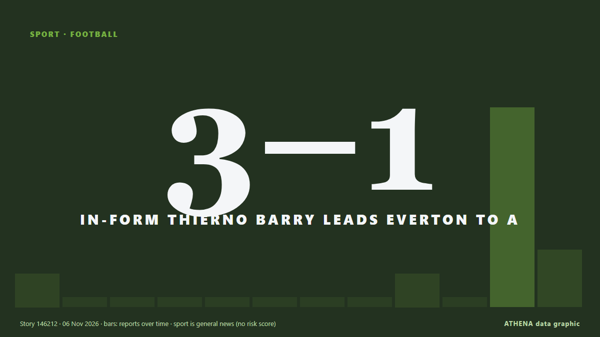

Sport
SponsoriséPrésenté par  Cybernetics and Artificial Intelligence Lab Welcome to the Cybernetics and Artificial Intelligence Laboratory, established at the Department of Business Administration of the National and Kapodistrian University of Athens. The lab is headed by Professor Dimitrios Thomakos. The lab aims to do research that can be published in top venues. Our research uses tools and methods of Artificial Intelligence, and lies in the following areas: - Forecasting - Decision making - Cyber security - Finance We are always looking forward to collaborating with exceptional students!
Cybernetics and Artificial Intelligence Lab Welcome to the Cybernetics and Artificial Intelligence Laboratory, established at the Department of Business Administration of the National and Kapodistrian University of Athens. The lab is headed by Professor Dimitrios Thomakos. The lab aims to do research that can be published in top venues. Our research uses tools and methods of Artificial Intelligence, and lies in the following areas: - Forecasting - Decision making - Cyber security - Finance We are always looking forward to collaborating with exceptional students!
Les titres sont affichés en anglais, tels que publiés.

FootballIn-form Thierno Barry leads Everton to a 3-1 victory over Coventry
Quickfire goals in the second half saw his side rally having gone a goal behind. de The Irish News (Belfast)
| 25 oct. | 32 |
|---|---|
| 26 oct. | 45 |
| 27 oct. | 64 |
| 28 oct. | 62 |
| 29 oct. | 72 |
| 30 oct. | 103 |
| 31 oct. | 74 |
| 1 nov. | 80 |
| 2 nov. | 113 |
| 3 nov. | 114 |
| 4 nov. | 91 |
| 5 nov. | 78 |
| 6 nov. | 46 |
| 7 nov. | 0 |
Japan FA honorary president Tashima to challenge Infantino for FIFA presidency
Tashima says he brings ‘honest, sound, upright attitude’ He is understood to have acted with the blessing of Uefa The Japan Football Association’s honorary president, Kozo Tashima, has announced his… de Guardian Business
U-17 World Cup: NDC urges Flamingos to beat Japan
He urged the players to sustain their impressive form and remain committed to the task ahead as they pursue the ultimate prize. de Channels TV
Nothing personal says England coach Thomas Tuchel as he overlooks Cole Palmer
Thomas Tuchel says Cole Palmer's England exile is “not personal”. de Yorkshire Post
FIFA visits Portugal as preparations for 2030 World Cup continue
A FIFA delegation is in Portugal this week to review preparations for the 2030 World Cup, which the country will co-host with Spain and Morocco. de The Portugal News
Rugby League World Cup semifinals: Everything you need to know
The Kiwis and Kiwi Ferns face semifinal showdowns in Newcastle this Saturday. de RNZ Pacific
Putin says countries resisting Russia's return to world sport are violating democratic bodies
President Vladimir Putin said on Thursday that countries opposing rulings to allow Russia to take part in international sport are violating the rights of both Russian athletes and democratic… de Deccan Herald
New star of Romanian swimming Daria Silișteanu wins second gold at Dakar 2026 Summer Youth Olympic Games
Romanian 17-year-old swimmer Daria Silișteanu won another gold medal at the Youth Olympic Games in Dakar (Senegal) on Thursday, November 5, in the 50-meter backstroke event. de Romania Insider
Arsenal injury update: Ezri Konsa, William Saliba, Bukayo Saka latest return dates
William Saliba’s return to fitness may have come at the perfect time for Arsenal. de Evening Standard (London)
Cristiano Ronaldo brings his international football career to an end
The 41-year-old is Portugal's leading goalscorer having scored 146 goals in 232 appearances. de Express Tribune
Cricketer dubbed ‘Clicky Ponting’ suspended for 2 years
A North East cricket player has been banned from the game for two years after the 'Clicky Ponting' scandal that rocked Saltburn CC earlier this year. de Chronicle Live (Newcastle)
McIlroy gets 2-shot penalty in first-round 70 in Abu Dhabi as Laporta leads with a 62
Rory McIlroy received a two-shot penalty in the Abu Dhabi Championship, leaving him eight shots behind leader Francesco Laporta. de Arab News
Tennis: Sinner to part company with coach Cahill at the end of 2026
(ANSA) - ROME, 06 NOV - After five glorious years together, Jannik Sinner and coach Darren Cahill will part company at the end of the 2026 season, a statement said on Friday. de ANSA English
Aston Villa make legal action decision after Jamie Carragher apology
Pundit had told Villa supporters to "shut the f*** up" de Evening Standard (London)
Australian T20 star Chris Lynn banned for cocaine use
Chris Lynn confirmed he had used cocaine “during a period of several hours across the evening of 15 July 2026 and into the early hours of 16 July 2026”. de Stuff
Ballon d'Or winner Kane signs Bayern extension until 2029
Bayern Munich striker Harry Kane has beaten Barcelona youngster Lamine Yamal and Real Madrid forward Kylian Mbappé to emerge as the best player of the 2025-2026 season in Spanish newspaper Marca's… de Vanguard
India vs Nepal, Men’s U19 Asia Cup: Squads, live streaming info — all you need to know
Here’s everything you need to know about the Under-19 Asia Cup clash between India U-19 and Nepal U-19 in Muscat on Friday. de Sportstar
LIV Golf league to shut down after five years
BC Partners reportedly walks away after player exodus LIV set to appear at bankruptcy hearing on Thursday The rebel LIV Golf tour’s attempt to relaunch itself after filing for bankruptcy has… de Guardian Business
Mass brawl sparks record 53 red cards in Brazilian under-20s match
The referee sent off 43 players, eight coaching staff and two board members after goal celebrations and taunting descended into complete chaos. de Free Malaysia Today
Victor Wembanyama scores career-high 52 points and 24 rebounds in Spurs win
French basketball star Victor Wembanyama delivered a remarkable performance against the Dallas Mavericks in an NBA regular-season game, setting two new career records. de AzerNews
Spain’s coach among mourners bidding farewell to De Miguel
Jesus De Miguel, 30, died following a collision with Andorra goalkeeper Jesus Owono during a second-division match on Monday. de Free Malaysia Today
Bournemouth stay perfect in Europa League as Milan lose again
Bournemouth maintained their flawless Europa League performance with a comeback 3-1 win over Sparta Prague, while AC Milan suffered another loss. de Arab News
Ballon d’Or winner Harry Kane signs contract extension at Bayern Munich until 2029
The England captain is nearing the end of the four-year contract he agreed after leaving Tottenham in summer 2023. de The Irish News (Belfast)
Arsenal edge stubborn Slavia in Champions League
The Premier League champions were quick to take control of the game, with Noni Madueke and Viktor Gyokeres scoring in the first half to secure a 2-1 win. de Free Malaysia Today
I will not be silenced – Lewis Hamilton stands by Charles Leclerc criticism
Hamilton was furious with his Ferrari team-mate at last weekend’s Mexican Grand Prix. de The Irish News (Belfast)
Australian F1 world champion Alan Jones dies aged 80
Alan Jones, who was the second Australian and first Williams driver to win the Formula One world title, died on Thursday a few days after his 80th birthday. de Cyprus Mail
Tributes pour in for Tenerife striker Jesus de Miguel as Raphinha sends “message of strength” to family
Gunners paid their respects at their training ground hours after Spaniard’s tragic death. de Evening Standard (London)
Nadal set to join Real Madrid board of directors
Tennis great Rafael Nadal is set to join the board of Spanish football giants Real Madrid. de BBC News
Haaland breaks City out of mini-rut at Leipzig
LEIPZIG, Germany: Erling Haaland’s 78th-minute strike helped Manchester City shake off a mini-slump with a 3-2 Champions League win at RB Leipzig on Wednesday. de Arab News
Tennis player Burrage receives death threats, abuse on social media after Chennai Open exit
Burrage shared a recording of a lengthy reel of abusive messages she received on Instagram following a loss to Vaishnavi Adkar in the round of 32 at the Chennai Open. de Sportstar
Como equal Champions League record with stunning 9-1 win at Lens
Como stormed into the Champions League record books with a stunning 9-1 demolition of Lens on Wednesday, equalling the biggest victory in the competition’s history. de Cyprus Mail
West Ham name Scott Parker head coach
LONDON: West Ham announced on Tuesday that they had sacked head coach Nuno Esprito Santo after a disappointing start to the Championship season. de New Straits Times
Virat Kohli breaks Sachin Tendulkar's ODI record as India beat New Zealand
Words are not enough to describe Virat Kohli's greatness. de Gulf News
Rybakina, Gauff drawn together at WTA Finals, Sabalenka faces Andreeva
World number one Elena Rybakina and American Coco Gauff were drawn in Group One for the WTA Finals, while second-ranked Aryna Sabalenka will face third-ranked Mirra Andreeva in Group Two at the… de Business Recorder
Valverde late strike seals Real Madrid 3-2 win at AEK
Real Madrid came from behind to beat AEK Athens 3-2 in the Champions League on Wednesday, with Federico Valverde scoring in stoppage time to complete a late victory. de Cyprus Mail